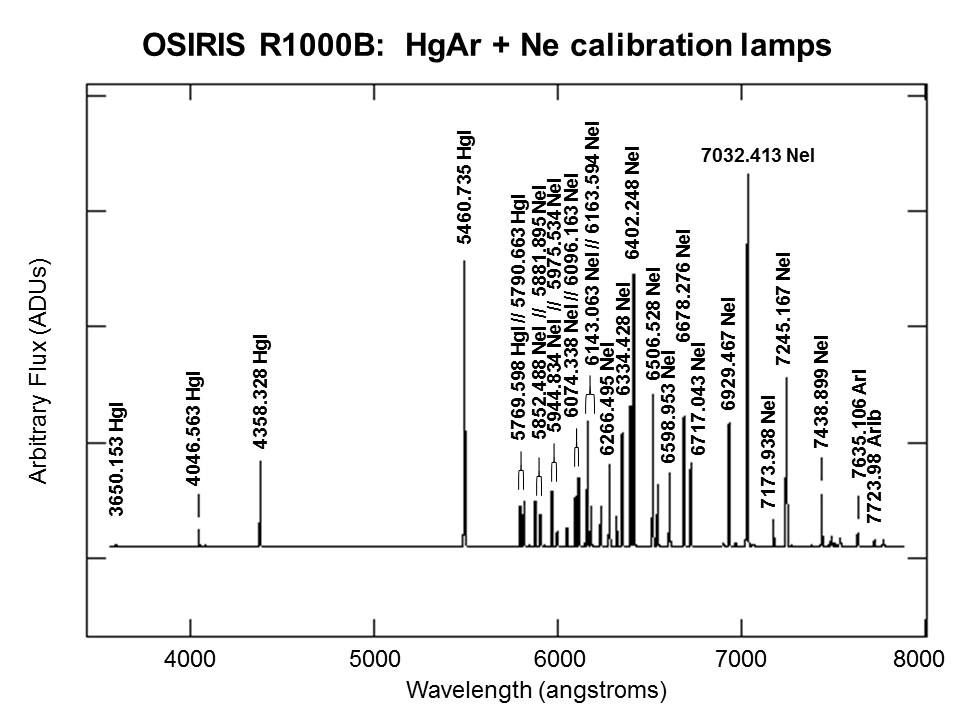

Combinning arc frames¶
Quickstart¶
The command for running the arc frame combination procedure is called by:
pylongslit_combine_arcs PATH_TO_CONFIG_FILE
The arc frames are (optionally) bias-subtracted and then simply summed together.
The output is a single arc frame master_arc.fits, which is saved in the output directory
specified in the configuration file. The frame is automatically rotated
and flipped so it is oriented with x being the spectral axis, with
the wavelength increasing from left to right - this is the default
orientation for the rest of the software, after the raw data has been
processed.
Quality Assesment¶
The arc combinning procedure will show the final master arc upon exiting. You can
press h to normalize the master arc to emphasize the contrast
between the arc lines and the background - however, this might exagerate the
very faint lines to be more visible than they actually are. The documentation for your instrument
should have a map of the expected arc lines and their wavelengths - you can use it
to check if the arc lines are visible and the expected range of the detector
is covered (a common error is if a lamp from one ion is forgotten to be
included in the input directory, meaning to a certain wavelength range is not being covered by the arc lines).
The example below is from the example data set GQ1218+0832 from GTC OSIRIS both before and after
normalization:
{kind=link}
{kind=link}
Inspecting the arc map from OSIRIS webpage , it is a able to see that overall pattern of the arc-lines is as expected:
{kind=link}
{kind=link}
Parameter options¶
The relevant parameters for the arc combinning procedure are (with example values):
"arc" : {
"arc_dir": "/home/kostas/Documents/PyLongslit_dev/SDSS_J213510+2728/arcs"
},
"combine_arcs" : {
"skip_bias": false
}
If you set "skip_bias": true, the bias subtraction will be skipped. This
is sometimes useful for instruments where the detector gain is different for
the regular calibration frames and the arc frames, since this can force the
noise in the arc frames to become negative - resulting in numerical issues.
The arc_dir parameter specifies the directory where the raw arc frames are located.
No other type of frames should be present in this directory.
For users new to data reduction - short introduction to arc lamp frames¶
Arc lamp frames are used to wavelength calibrate the detector, i.e. to assign a wavelength to each pixel in the detector. This procedure is described in detail in the wavelength calibration section. Every raw arc lamp frame has a emission spectrum of one or several ions with known wavelengths. In this step the arc frames are combined to create a single master arc frame, so the wavelength calibration can be done on a single frame, instead of on each individual arc frame.